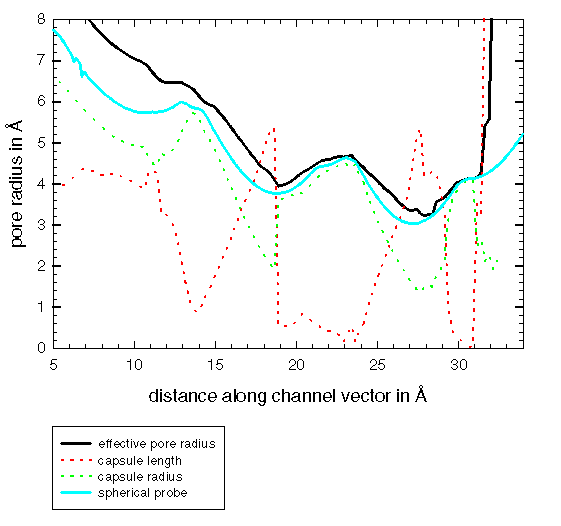

The graph shows that the central pore is wide, with a minimum
effective radius of 3.24Å. Overall the pore has a reasonably
isotropic cross section - the use of a spherocylindrical probe
only marginally increasing the effective radius.


Oliver S. Smart
(last modified 23/9/96)